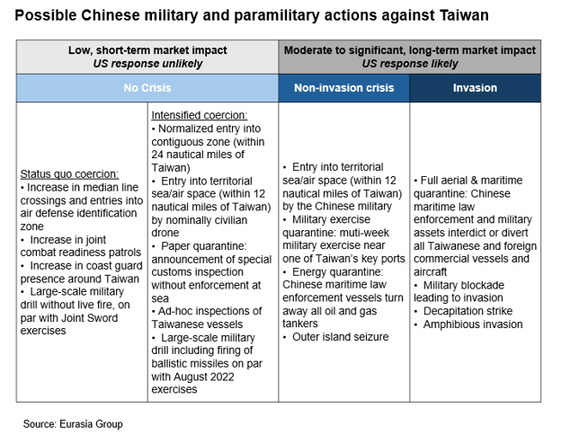
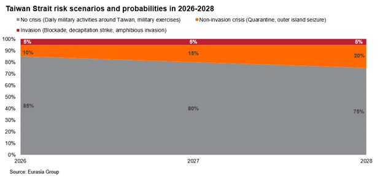

|
 |
|||
|
||||
|
||
China likely seeking to normalize coast guard patrols near Taiwan’s main island. The Chinese coast guard (CCG) conducted patrols in waters east of Taiwan on 1 June. This was followed by a special law enforcement operation on 6-8 June in waters southeast of Taiwan, during which CCG vessels entered Taiwan’s 24-nautical-mile contiguous zone. A second CCG patrol east of Taiwan occurred on 4 July. These patrols were much closer to Taiwan than previous patrols, which were limited to Taiwan’s offshore islands near the Chinese coast and in the South China Sea.  Cross-strait risks will remain low, as US unlikely to push back strongly on China’s actions. In July, the US moved a squadron of coast guard cutters from the Middle East to the Western Pacific, in a likely effort to make up for the shortfall in military presence following prolonged deployments from Asia to the Middle East for the Iran war. However, US President Donald Trump is prioritizing maintaining the truce with Beijing over countering Chinese gray-zone military coercion against Taiwan. The Trump administration only conducted four US naval transits through the Taiwan Strait since 2025, while former president Joe Bide authorized nine transits in 2024 alone. Trump has continued to delay arms sales to Taiwan, which he views as leverage to obtain goodwill from China (see: Taiwan, China, United States: Trump will subordinate Taiwan arms sales to US-China stability, 19 May 2026). Eurasia Group contacts noted that Washington has shown disinterest in engaging Taipei on potential responses to quarantine scenarios. In response to the new CCG patrols east of the island, only the de facto US embassy in Taipei issued a condemnation, not the State Department or the Pentagon. Beijing is likely to avoid triggering a crisis (10% odds in 2026) to preserve the truce with Trump. China is unlikely to engage in more escalatory quarantines that carry a higher risk of a US response. Such actions include running a military exercise close to one of Taiwan’s ports, effectively disrupting all traffic into and out of the island for the duration of the quarantine, or preventing all liquid natural gas carriers from reaching Taiwan. The risk of these forms of quarantines will gradually rise to 20% probability in 2028 (see Taiwan, China: Strait of Hormuz closure offers lessons for China’s Taiwan playbook, 19 March 2026). Beijing is unlikely to take such escalatory actions absent unprecedented actions or statements by Washington or Taipei that support Taiwanese sovereignty.  A crisis scenario could also be triggered by a collision between Chinese and Taiwanese coast guard vessels or by Taiwan firing on a CCG vessel entering its 12-nautical-mile territorial waters. Neither scenario is likely, given Beijing’s desire to avoid unnecessary escalation that could destabilize the US-China truce. Taipei, too, is acting with an abundance of caution, out of concern that a less sympathetic Trump administration will blame Taiwan for escalating if it were to respond too strongly to Chinese pressure. |